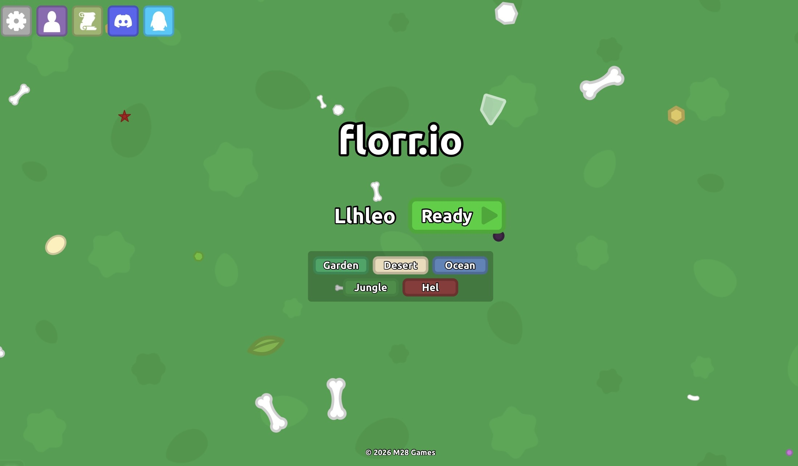
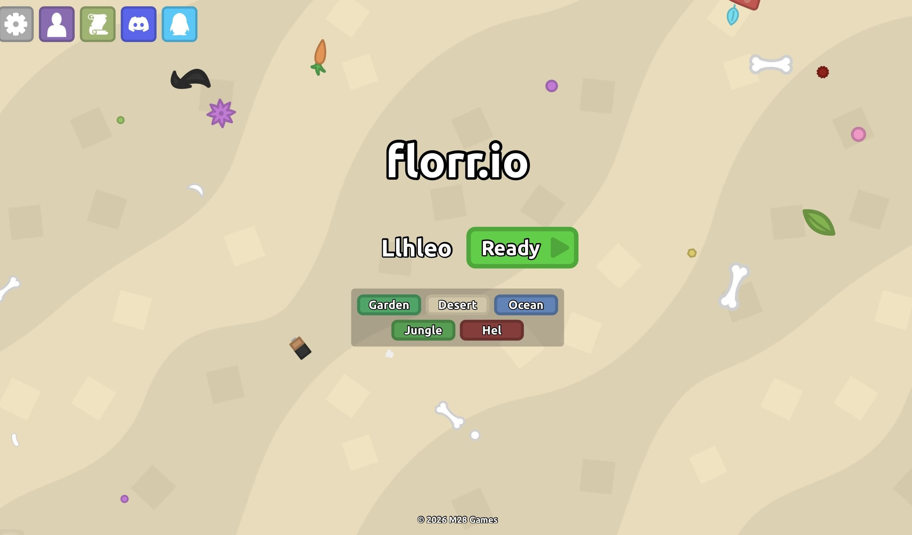
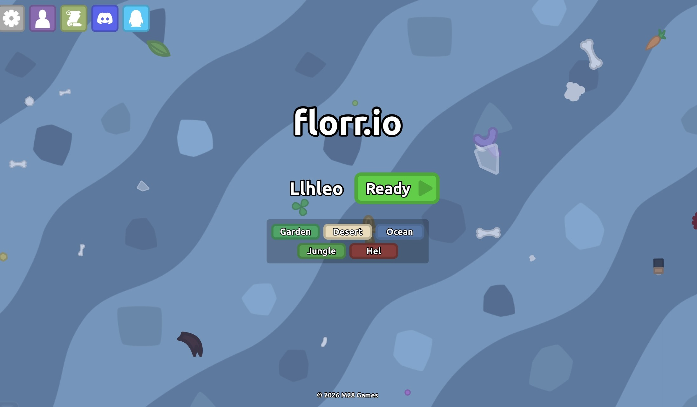
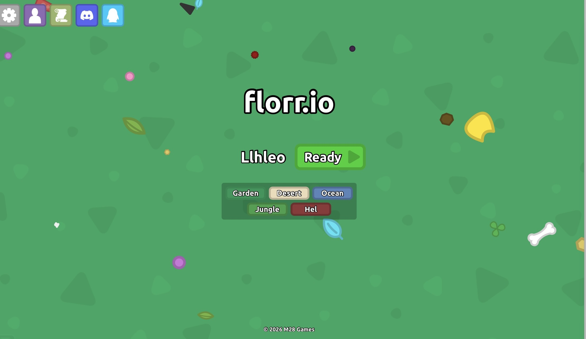
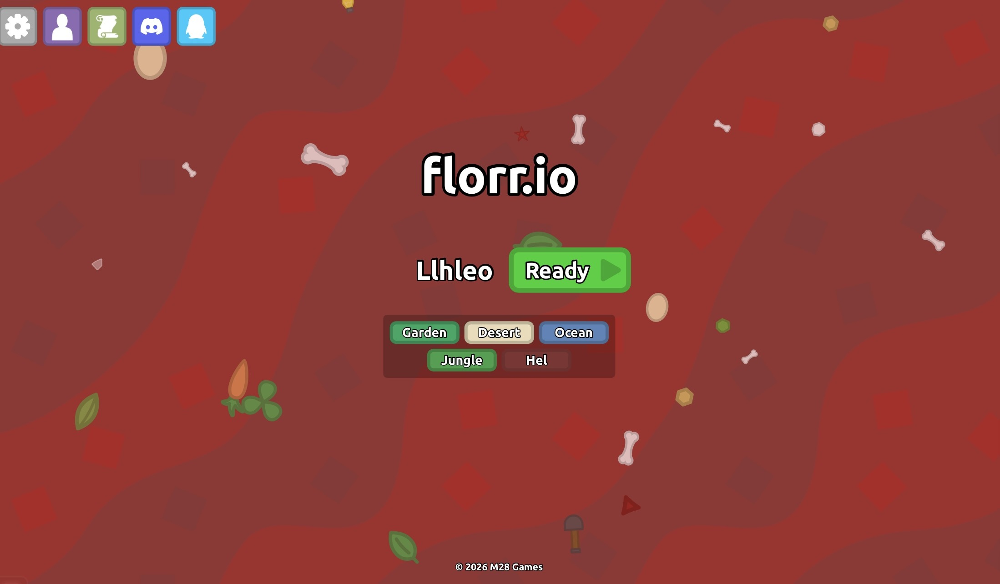
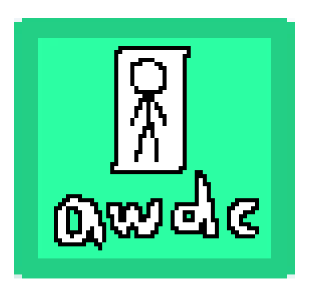

FLORR.IO GUILD · EST. FEB 24
不是所有工会，
都叫 2n。
我们因 Florr 相遇，也因彼此成为 2n。
向下探索
WE ARE 2ⁿ · 这就是 2n
不只是一个
Florr 公会。
从 02.24 开始，我们把一次次上线、组队和共同经历，变成了属于 2n 的故事。

01 · 起点
花园GARDEN
故事从这里开始。第一次组队、第一次并肩向前。

02 · 炙热
沙漠DESERT
环境越严苛，越需要彼此照应。能走到这里，就已经不只是随便组队了。

03 · 深入
海洋OCEAN
向更深处探索，也把默契带得更远。海洋是很多玩家真正开始形成配合的地方。

04 · 同行
丛林JUNGLE
复杂的路，不必一个人走。到了这里，比操作更重要的，是有人始终在旁边。

05 · 极限
地狱HEL
走到最危险的地方，仍然看得到 2n。真正的核心成员，往往也在这里被记住。
会长 · PRESIDENT
awdc
2 个 Super
作为 2n 的会长，负责带领整个公会向前推进，也是 2n 形象与组织的核心人物。
02 SUPER

副会长 · VICE PRESIDENT
flowerwsr
精通计算机
参与 Florr 维基的维护，也参与公会成员表格与相关信息的编写、整理和维护，是 2n 的重要信息中枢。
WIKI · DATA
“把资料整理好，才能让工会跑得更远。”
副会长 · VICE PRESIDENT
cnflydream
3 个 S
拥有 3 个 S，是 2n 管理层中非常醒目的核心成员之一，在实力与存在感上都很突出。
03 S
CORESTRONGACTIVE
副会长 · VICE PRESIDENT
sschara
3 次血祭贡献
曾为工会贡献 3 次血祭。真正重要的从来不只是头衔，而是愿意在关键时候为整个 2n 站出来。
×3 BLOOD SACRIFICE
“关键时刻，得有人顶上去。”
MEMBERS
One guild. Many names.
100+公会成员
从核心队伍到日常上线成员，2n 不是一张名单，而是一群会在 Florr 里彼此照应的人。下面展示的是目前整理出的部分成员。
LlhleoHugo12168ZHZ114514zhy10满xtxshimstarry_01Taurus
X-zeroMeteorFallFawudazhengILXNcitizensdianlaoLTJgrassland
LCY2024oOjisizhefly-cybookshelf
查看完整资料与旧站内容 →
2ⁿ · HALF-YEAR
From a guild
to a story.
HISTORY
Built together.
2ⁿ founded
公会成立。
Half-year anniversary
留下第一段属于 2ⁿ 的纪念影像。
≈100 members
继续扩展 2ⁿ 的成员与故事。
READY?